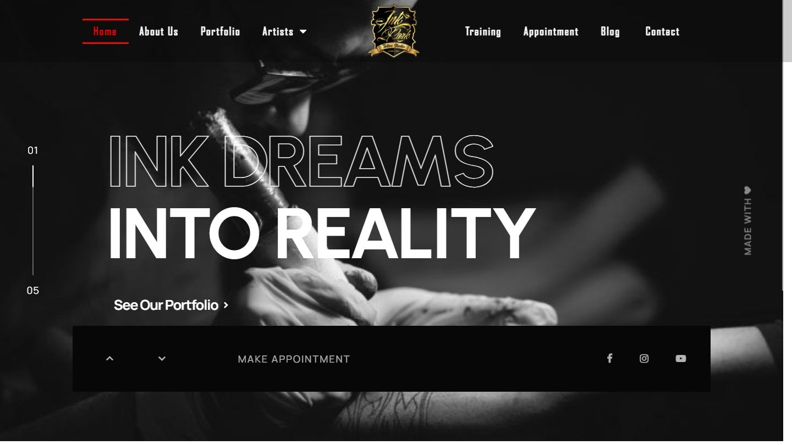

← Selected work
Case study · 2022
InkPark Tattoo
A website for a tattoo studio in Dhaka.
Stack: WordPress, Elementor Pro, custom CSS · Live site ↗

The brief
The studio needed to show its work, introduce the artists, explain training, and make booking easy. The site had to carry a strong visual identity without slowing down on mobile.
What I did
I built the site in WordPress with Elementor Pro and custom styling. The image-heavy pages were tuned for mobile, and the booking path is visible from the first screen. The studio team can update the portfolio and artist pages themselves.
- Custom-styled templates for portfolio, artists, training, and appointment pages.
- Image-heavy layouts tuned for mobile.
- A clear booking and inquiry path.
- Responsive navigation and typography.
- An editing setup the studio team can maintain.
Result
A site that looks like the studio and does the practical job of getting someone to book.